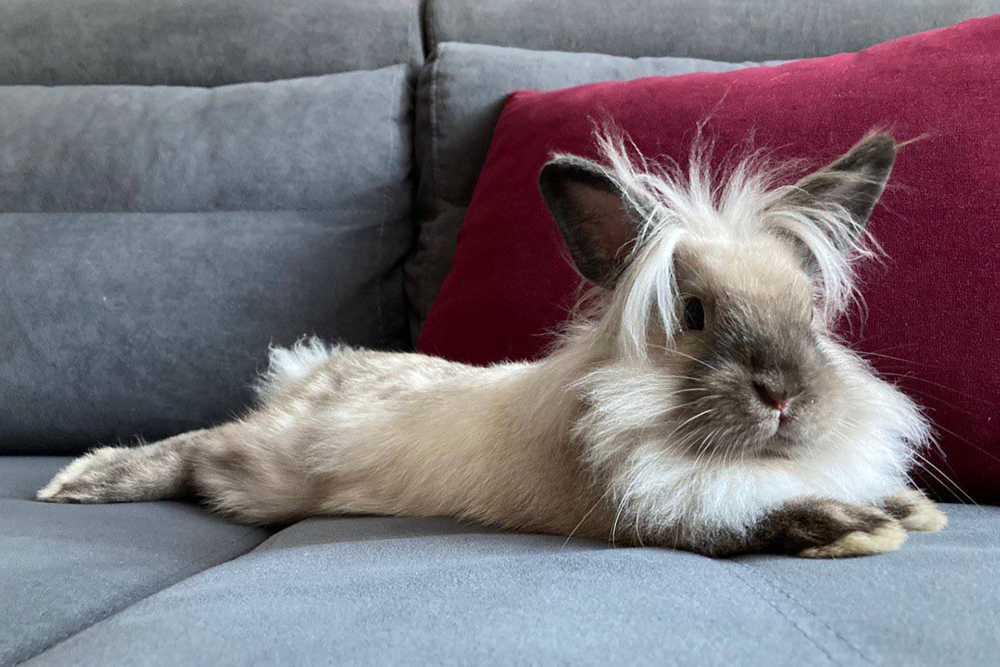
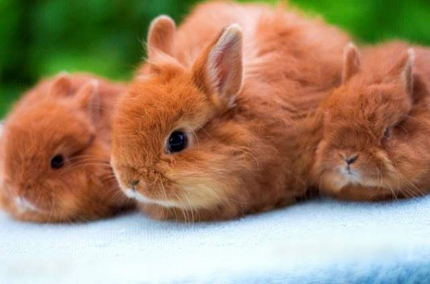
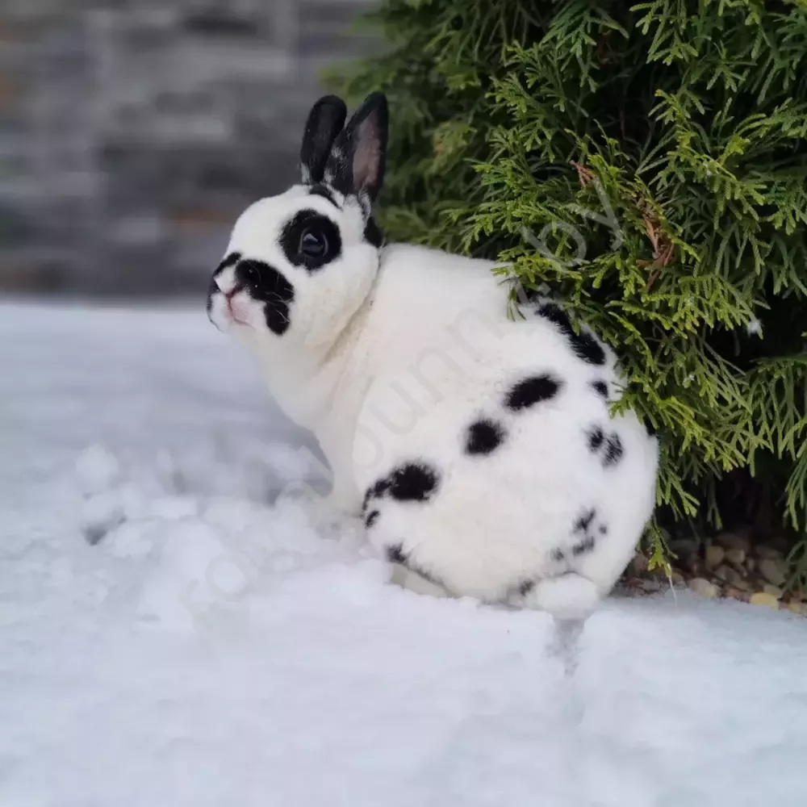
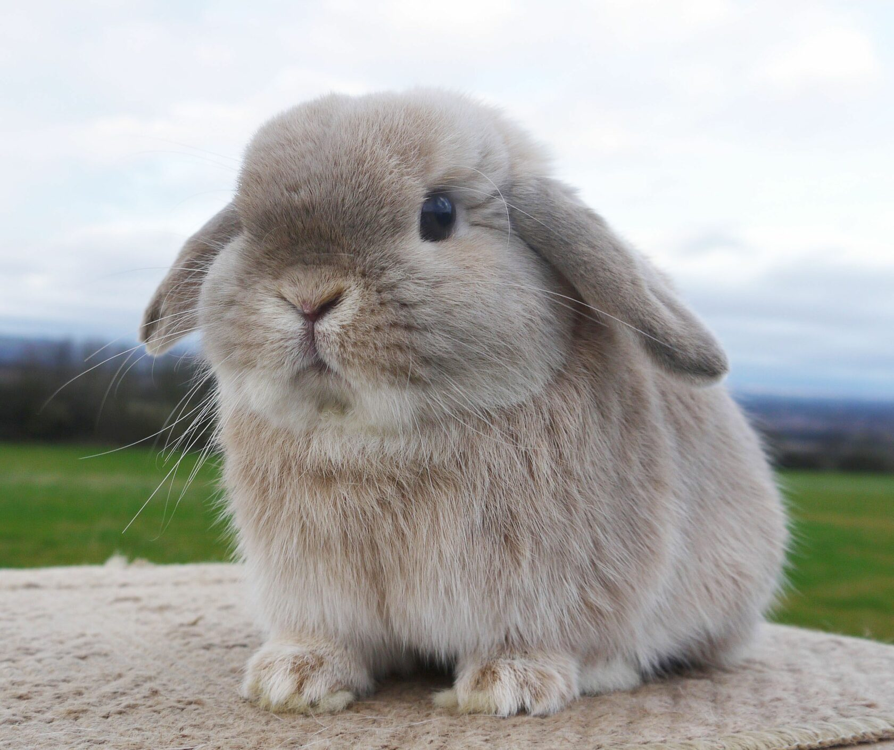

Это страница про кролика
Карликовый кролик, или польский кролик, — разновидность домашнего кролика, адаптированная для содержания в домашних условиях. Согласно стандартам Американской ассоциации кролиководов, карликовым, в зависимости от породы, считается кролик массой до 3—6,5 фунтов.
Породы кроликов:
- Львиноголовый кролик
По названию породы несложно догадаться, что этот вид кролей во внешности имеет нечто общее с «царем зверей». Схожесть действительно присутствует – голову «львенка» украшает пышная грива. Шерсть на туловище имеет более скромную длину. Тельце у такого зверька вытянутое, а ушки отличаются небольшими размерами. Цветовая гамма довольно разнообразна, у некоторых особей вокруг глаз имеются черные ободки. Вес взрослых грызунов варьирует в диапазоне 1,3-1,7 кг. Представители данного вида очень игривы и дружелюбны.
 - Миниатюрный львиноголовый вислоухий кролик
Порода домашних кроликов, признанная Британским советом по кролиководству. В настоящее время порода не признана Американской ассоциацией кролиководов. Отличительной особенностью этой породы, помимо вислоухих ушей, является грива типа Львиная голова и небольшие размеры: 1,5–1,6 кг.
.jpg)
- Лисий кролик
Кроликов данного вида часто называют также «карликовыми лисами». Их отличительная черта – длинная шерсть рыжего цвета. Встречаются особи и с другими окрасами, например, шиншилловым и агути. Передние лапки у этих зверьков непропорционально малы по отношению к туловищу. Вес взрослой «лисички» – около 1,3 кг. Каждая особь обладает индивидуальным характером, поэтому предугадать насколько уживчивым будет зверек – невозможно. Кому-то может попасться очень спокойный питомец, а кто-то, вероятно, станет обладателем норовистого пушистика, к которому придется искать подход.
 - Карликовый Рекс
Мини-кроликов этой разновидности еще называют «плюшевыми». Они отличаются наличием короткой, блестящей шерсти, которая внешне напоминает плюш или бархат. Окрас может быть различным: белым, голубым, черным, желтым, коричневым, рыжим. Средний вес взрослой особи достигает 1,5 кг, однако максимальная масса тела может доходить до 4 кг. У представителей данной породы плохо развиты усы, по этому критерию их легко отличить сразу после рождения. Уши посажены близко друг к другу, поставлены вверх и назад под углом в 45 градусов. Задние лапы длиннее передних. У самок отсутствует подгрудок. Туловище удлиненной формы. Глаза крупные, близко посаженные. Такие питомцы сильнее других подвержены различным кожным заболеваниям в связи с нестандартным строением волосяного покрова, снижающим его защитные функции. Характер у них спокойный, флегматичный, образ жизни не слишком активный.
 - Баран
Представители данного вида обладают очень необычным и привлекательным внешним видом. В возрасте двух недель крольчата мало чем отличаются от своих сородичей, однако, начиная с трехнедельного возраста, уши животного начинают опускаться вниз, свисая по бокам головы. Окрас бывает разных цветов и оттенков: встречаются серые, белые, желтые, голубые и черные зверьки. Вес взрослой особи обычно достигает 2 кг, однако карликовые бараны могут вырастать и до более крупных размеров с массой тела до 3 кг. Порода пользуется большой популярностью, особенно в качестве питомцев для детей. Зверьки отличаются покладистым характером и хорошо ладят с людьми.
